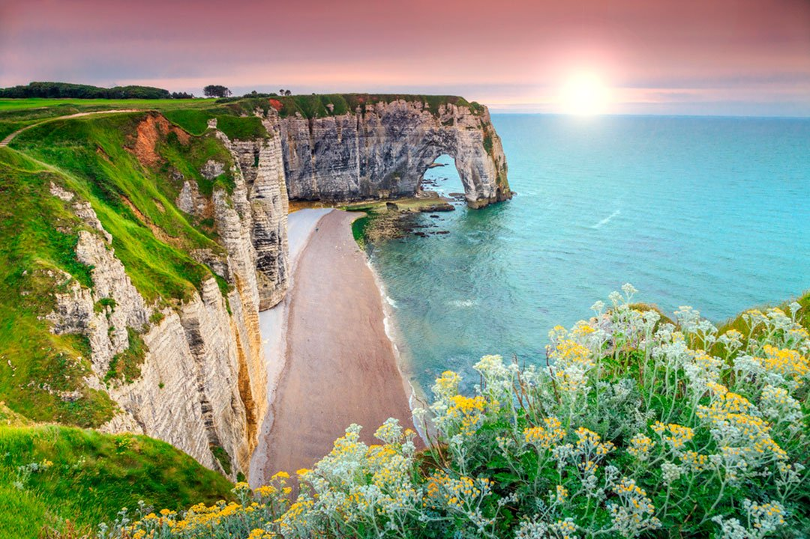
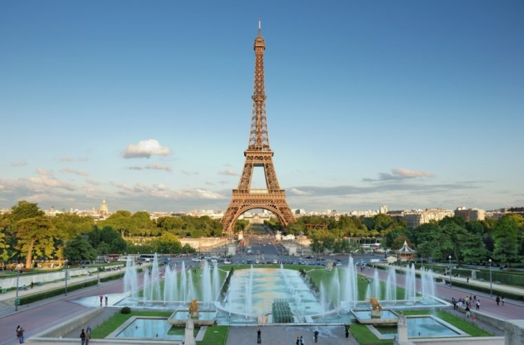
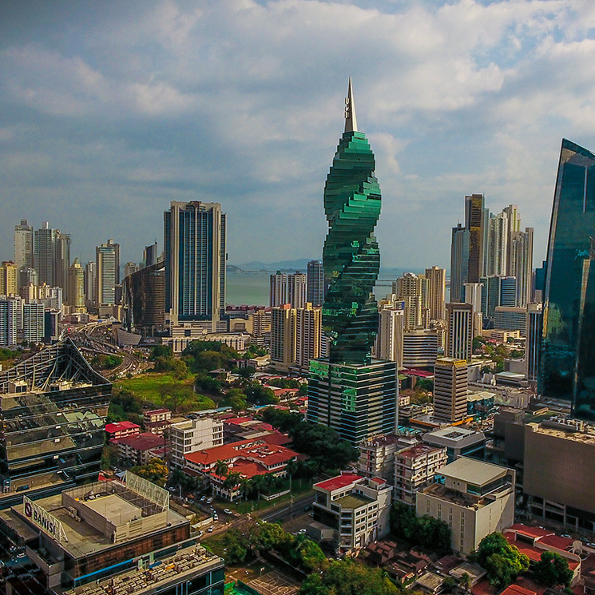
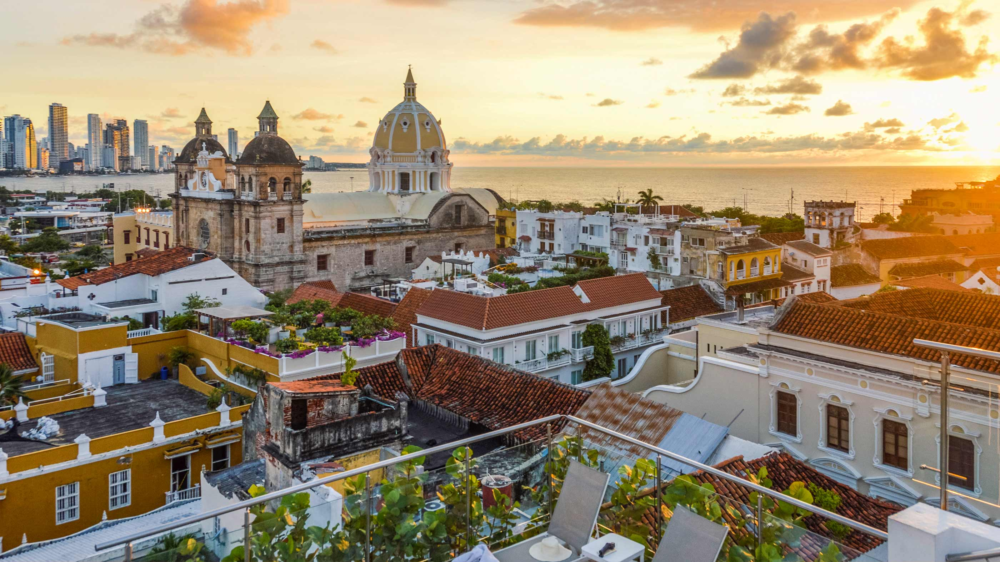

 Santiago Bejarano
Santiago BejaranoAcabo de volver de París por enésima vez y como cada vez que voy regreso encantado con millones de cosas. Pero hoy te quiero dar un consejo sobre dónde dormir en París, algo que es cada vez más costoso.París es la ciudad de las luces, la ciudad del amor y la ciudad donde todo cuesta un poco más de lo esperado. Y el alojamiento no es una excepción. Yo he usado Airbnb infinidad de veces pero me fui dando cuenta que el precio en esta ciudad poco mejora.Así que me incliné por comenzar a utilizar hoteles.
Es una de las ciudades que más visité en mis viajes. Una u otra cosa me llevan siempre a este sitio. Es una ciudad increíble, aunque debo reconocer que buscar dónde dormir en París no es tarea fácil. Como algo de experiencia tengo y después de haber probado más de un alojamiento, hoy te voy a contar dónde puedes dormir para poder ver con tranquilidad el Arco del Triunfo, el río Sena o la torre Eiffel. Viajar a París es una gran experiencia, ya que hay muchas cosas que hacer en esta maravillosa ciudad. Pero como te decía una de las cosas más difíciles es buscar dónde dormir en París barato. Es uno de los lugares con los hoteles más famosos y caros del mundo. Encontrar un hotel barato en París es realmente una proeza.
Santiago BejaranoLlevo viviendo en Edimburgo casi 6 años continuos y una de las recomendaciones que siempre debo dar están relacionadas con el clima y con qué ropa llevar a Escocia. Debido a que la consulta se repite con amigos y lectores de El Blog de Viajes he decidido escribir un artículo en el que te explique porqué este país no se parece mucho al sitio donde vives. Saber qué ropa meter en un el equipaje en un viaje a Escocia puede ser tan fundamental como no olvidarnos el nombre del hotel o lo que haremos al llegar a destino.
Aunque oficialmente comienza en marzo no confíes mucho. No descartes encontrar días con viento, lluvia y temperaturas que oscilan entre los 3 y los 10 grados en abril y pueden trepar a días con 14 o 15 en junio. Por ello mi consejo es que no dejes de traer ropa de invierno (si vives en un lugar cálido como España tu ropa invernal es ligera.